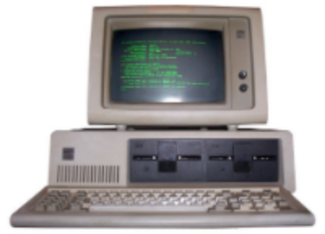

History of Personal Security
The history of personal security is very long and has a lot of events. Personal Security has existed since the beginning of the computing. In the 1970s hackers started to figure out how to abuse the technology system. These hackers broke into phone lines in order to make free calls. A man name Bob Thomas was a able to make a computer program called the “Creeper” and it would travel to Tenex terminal and print the message “I'M THE CREEPER: CATCH ME IF YOU CAN” (SentinelOne 1). A man name Ray Tomlinson saw this program and like it very much so then he begin to mess with it. Tomlinson was able to make this program self replicate and so it became the first computer worm. He didn't stop there, Tomlinson was also able to make a program call the “Reaper.” This program’s purpose was to find the Creeper program and delete it. Ray Tomlinson basically invented the first anti-virus. “Widespread scanning has been common since 1997” in the majority of anti-viruses (Householder 1). Even though computer virus started out as a joke in the early days of computing, now a days computer virus and worms are very deadly for they could cause millions of dollars of damages, but also a hacker could be able to steal your identity.